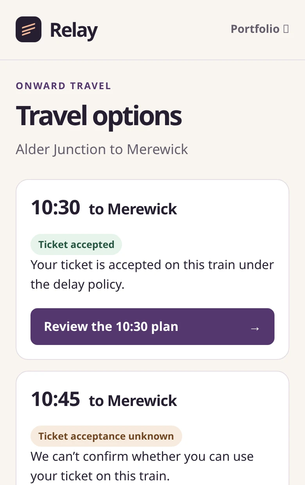

Relay · Independent rail service design
Designing for a missed connection.
A late train leaves passengers with an immediate decision. Which service can they take with the ticket they already have, and what happens if they need help changing trains?
Try the interactive journeySituation
A delay can make a connection unusable
I scoped the working journey around one passenger changing at Alder Junction. The first train is expected at 10:08. The onward train is scheduled to leave at 10:00. The passenger needs to know what this means for their journey before comparing alternatives.
A delay alert alone leaves three questions open. Will I miss the connection? Can I use my ticket on another train? Will I get help changing platforms?
Task
Help a passenger choose a valid next step
I led the content, service and conversation design for this independent concept. I scoped the work to one booked journey and defined what a passenger should be able to do from the ticket screen.
Success meant identifying the affected connection, choosing a train that accepts the ticket, and finding a safe way forward when assistance or support is uncertain. I used those criteria to design the branches and check the working journey.
Action
From disruption to a next step
I mapped nine journey stages and used the service blueprint to separate passenger decisions from the service facts that support them. The three annotations below show how that changed the interface.

Lead with the impact
The alert names the train the passenger is expected to miss. The arrival estimate and last-checked time explain why Relay is showing it.
View the Figma annotation
Put eligibility beside the train
Passengers can compare the 10:30 and 10:45 in one place. If assistance is unconfirmed, the screen preserves the ticket decision and offers help with that specific service.
View the Figma annotation
Show what happened to the request
A review screen explains what will be shared before the passenger sends it. Pending and failed requests have their own states. The reference appears after the request succeeds in the prototype.
View the Figma annotationGive conversation a defined role
Passengers can check the ticket and resolve disruption through screens. Conversation is designed for follow-up questions and exceptions. The service owns ticket and assistance decisions, and the passenger confirms any consequential action.
The existing Dialogflow CX export gave the same delay answer regardless of the journey entered. I used that finding to shape a webhook-backed design with an explicit unavailable state. A local mock returns separate ticket and assistance decisions for the same scenario.
Result
What I verified
- 6 of 6
- Scripted web paths passed, including a changed option, unconfirmed assistance and failure followed by retry.
- 4 of 4
- Local webhook checks passed for the delay fixture, unavailable status, session isolation and an unsupported action.
- 4 taps
- From the ticket screen to saving the 10:30 plan on the standard path. This is a design measure from the prototype walkthrough.
These measures describe the prototype and local service checks. Passenger outcomes and Dialogflow CX sandbox behaviour are still unmeasured.
Reflection
Availability needs more than one answer
The same train can accept a ticket while transfer assistance remains unknown. Showing one combined status would hide the distinction that matters most to a passenger who needs help.
In a moderated test, I would record the proportion of participants who choose a valid next step without prompting, the time to that decision, and whether they can explain what remains uncertain. The emotional map helped identify where to look for hesitation. Those emotions remain hypotheses.
Relevance
Designing for decisions under pressure
This is how I approach services where the next step depends on eligibility, changing information or another team. I make the decision and its evidence visible, preserve what the person already has, and design the handoff around what the service can confirm.
Try the interactive journey ↗ Play the Figma recovery prototype ↗